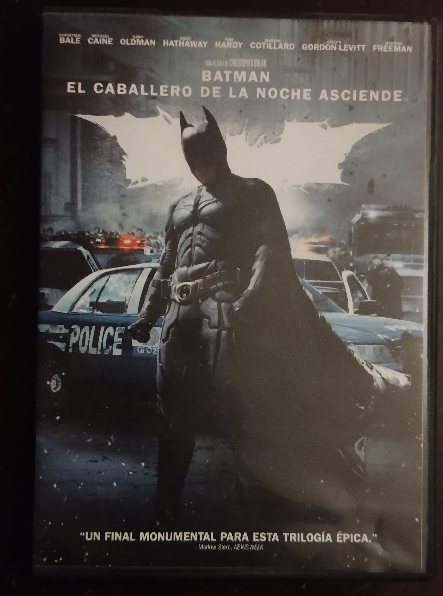

Batman: El Caballero de la Noche Asciende

Ficha Tecnica
- Fecha de estreno: 20 de julio de 2012
- Género: Acción, Drama, Superhéroes
- Director: Christopher Nolan
- Duración: 164 minutos
- Reparto: Christian Bale, Tom Hardy, Anne Hathaway, Gary Oldman
Sinopsis
Ocho años después de asumir la culpa por los crímenes de Harvey Dent, un envejecido y retirado Bruce Wayne se ve obligado a volver a ponerse el manto de Batman cuando Bane, un brutal terrorista enmascarado, amenaza con destruir Ciudad Gótica desde sus cimientos